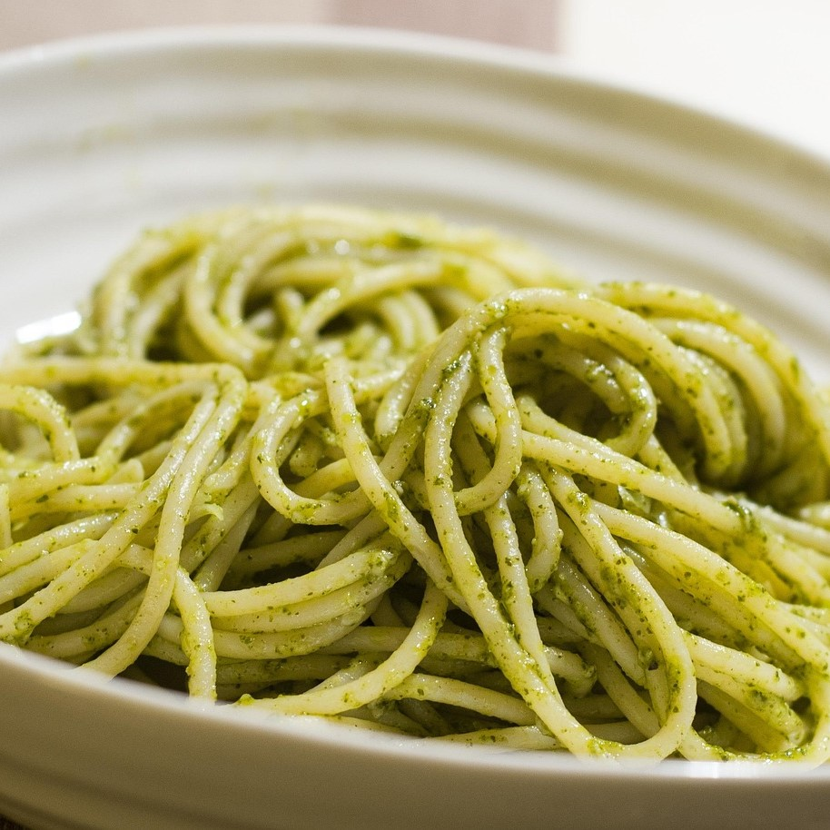

⬅Back to Home
Green Spaghetti

Description:
This delicious spaghetti stands out because of its creaminess and rich flavor. It's not only a pleasure to the palate, but it's also healthy. This recipe in special is for multiple servings, but you can halve the ingredients if you want a smaller batch.
Either alone or accompanied with other dishes, a good spaghetti is always a star.
Ingredients:
- 500 grams of spaghetti pasta
- A bunch of spinach
- 3 chiles poblanos
- 1 cup of chicken broth
- 1 can of table cream
- 1 can of evaporated milk
- 1/3 of a big onion, finely chopped
- 1 tablespoon of butter
- 1 tablespoon of vegetable oil
- Salt and water
Steps:
- In a big pot, boil a generous amount of water and add salt. When the water has reached boiling point, add the spaghetti pasta. Cook the pasta until it's al dente and drain the water.
- In another pot, boil the spinach, and heat the chiles directly in the burner fire (this is called tatemar in Spanish).
- Once the spinach is soft, let it cool or cool it with ice, and put the burnt chiles in a ziploc bag for around 15 minutes.
- Remove the seeds and veins of the chiles, and add them with the spinach, the chicken broth, the table cream and the evaporated milk into a blender. Mix it until all the ingredients are integrated.
- In a big pot, heat the butter and oil and add the chopped onion. When the onion becomes transparent, add the spinach cream and let it boil.
- Add the cooked spaghetti into the cream, cook for a bit and serve. Enjoy!